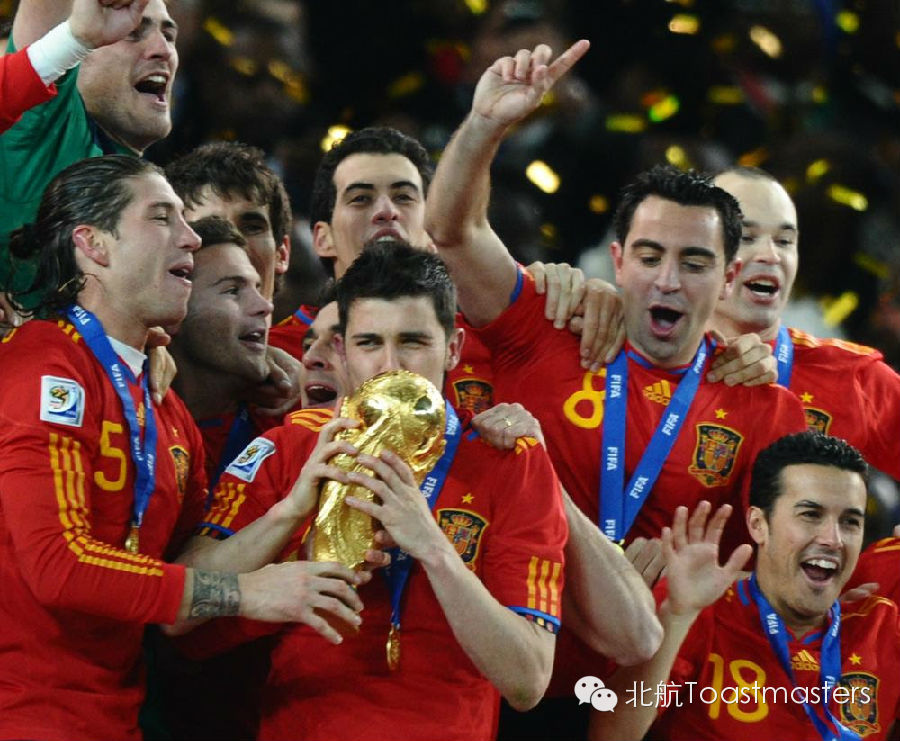
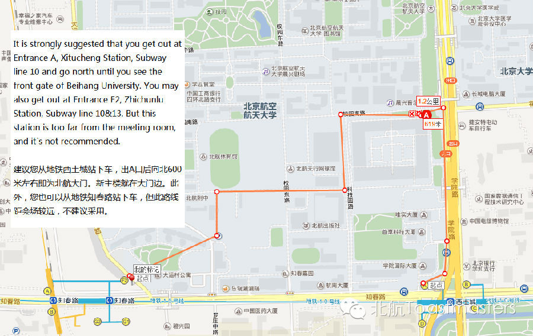

Saying Goodbye
Time: Friday June.20 19:30-21:30
Venue: Room A212, New Main Building, Beihang University
Toastmaster: Peter
How time flies! I still remember that day when we were holding the farewell meeting for Lily, Kerry and John six month ago. Now, it`s time for us to say goodbye to Amanda, Jocelyn, Jason and Shawn. Time after time, we`ll have to leave the faces that we are so familiar with. It`s heart broken, but also inspiring. Through their experience in Beihang Toastmasters Club, they`ve become more confident, and more competent. In this meeting, we`ll listen to their voice, and give them a memorable send-off meeting.
Game Session
Game Master: Doris
Why so serious? Let`s learn by playing! As this will be a send-off meeting, we`ll have a special game session instead of the prepared speeches. During this session, our senior member Doris will arrange several interesting games for you. Guys! Come, and join us!
Retrospect & Awards

Session Master: Deron & Peter
Amanda, Jocelyn, Jason and Shawn have all contributed so much for our club. Now, they are graduating from Beihang University, and also Beihang Toastmasters Club. Deron will lead us to retrospect their past performance in our club, and all of them will get a special award for their contribution for our club.
Map

Our meeting venue is RoomA212, New Main Building, Beihang University (北航新主楼A212房间). Click here to see large map. And you can phone to Deron for help.
TEL: 180-0125-3933
See you in the meeting!
https://mp.weixin.qq.com/s/T0h7HPj9DDO1BB2vAuuE5w
本页为抢救式本地归档，图文已永久保存。